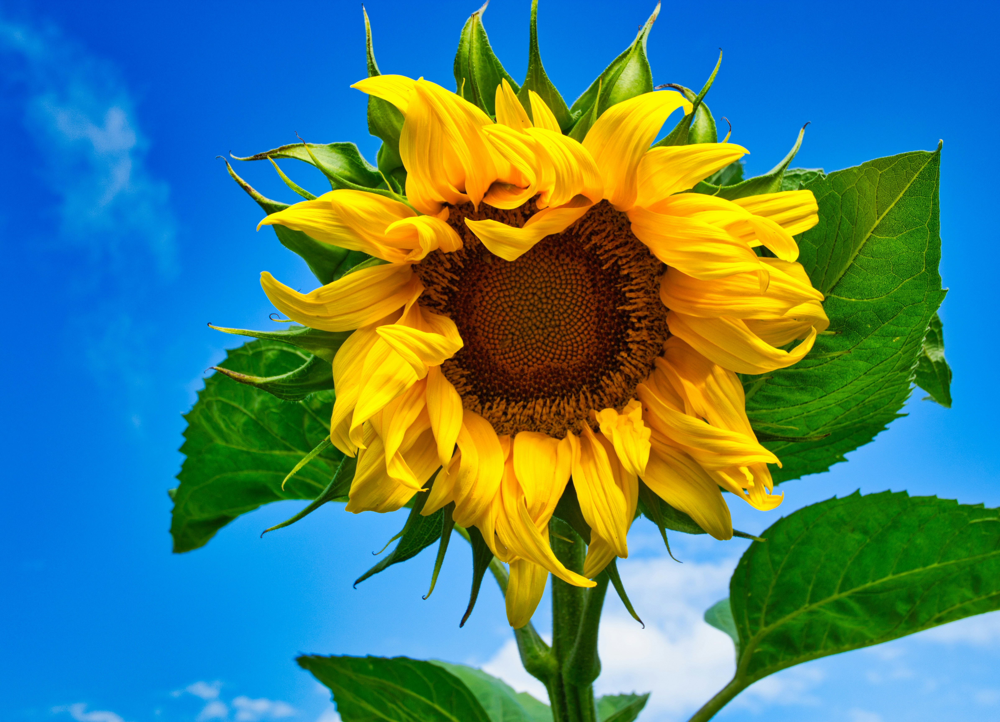
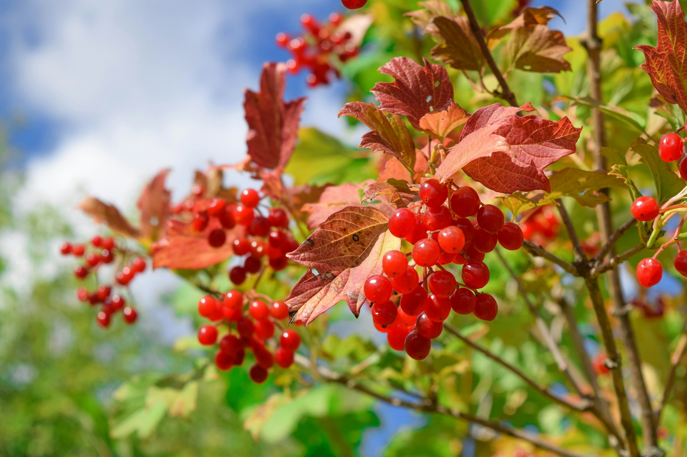

<section class="content-section">
  <div class="container">
    <div class="content-wrapper">
      <h1>Our symbols</h1>
      <div class="content">
        <div class="content-text">
          <h3>The Sunflower</h3>
          <p>
            The sunflower holds a significant place in Ukrainian culture,
            symbolizing prosperity, warmth, and a connection to the land.
          </p>
          <p>
            Its vibrant golden petals mirror the country's rich agricultural
            fields, while the sunflower's inclination to follow the sun evokes
            the spirit of resilience and hope inherent in the Ukrainian people.
            As a national symbol, the sunflower represents the enduring
            brightness and strength of Ukraine.
          </p>
        </div>
        <div class="mask">
          
        </div>
      </div>
      <div class="content reverse">
        <div class="content-text">
          <h3>The Viburnum</h3>
          <p>
            Viburnum, known as "kalyna" in Ukrainian, is deeply ingrained in the
            country's cultural symbolism.
          </p>
          <p>
            Adorning the Ukrainian national emblem, the viburnum represents
            unity, strength, and the enduring spirit of the nation. With its
            clusters of red berries, often associated with blood and sacrifice,
            viburnum serves as a poignant symbol of the resilience and tenacity
            of the Ukrainian people throughout their history.
          </p>
        </div>
        <div class="mask">
          
        </div>
      </div>
    </div>
  </div>
</section>
